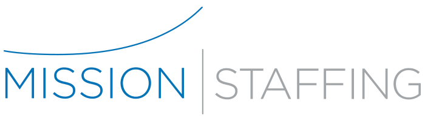

HR and recruiting
Elinext. Applicant Tracking
Candidate and vacancy modules helped streamline active hiring.
Read case study
Saw you are hiring a CRM Analyst. That usually means the business wants cleaner candidate, client, and placement data, but the tool work can be bigger than one analyst role.
This brief focuses on the technical work behind that role: data flow, CRM sync, and practical automation.
The CRM Analyst search says Mission is tightening its core data engine. Your site already depends on job boards, alerts, resume forms, and recruiter follow-up. As the firm grows, client notes, candidate status, and placement history can split across tools. That slows matching, reporting, and handoffs between direct hire and temp teams. If the CRM stays hard to trust, recruiters spend more time cleaning data than closing searches.
Six-week pilot, with a short demo each week. We support the CRM Analyst with engineers who ship fixes.
Map CRM, job board, resume form, alerts, and recruiter handoffs into one clear data flow.
Clean duplicate candidate and client records, then set rules for ownership, status, notes, and source history.
Build API links or small services so forms, job pages, and CRM updates stop needing manual re-entry.
Add reporting views for placement speed, stale records, recruiter load, and open role quality by division.
Run a pilot with one division, fix daily issues, and leave clear support notes for your analyst.
Elinext is a full-cycle software development company, active since 1997, with global delivery teams. We have about 700 in-house specialists across web, data, mobile, QA, and management. For Mission, the fit is CRM, web, data, automation, and secure delivery. Our delivery is backed by ISO 9001 and ISO 27001 controls for quality and security. Our teams have served Broadcom, Siemens, Volkswagen, TRUMPF, TUI, Parrot, and TransPerfect. We can support your CRM Analyst, keep control with Mission, and ship the missing technical work.
Candidate and vacancy modules helped streamline active hiring.
Read case studyTalent records and documents moved beyond spreadsheets.
Read case study